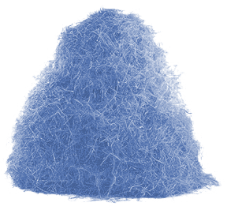
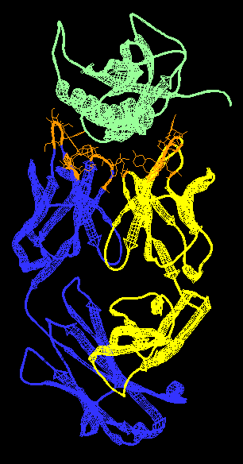
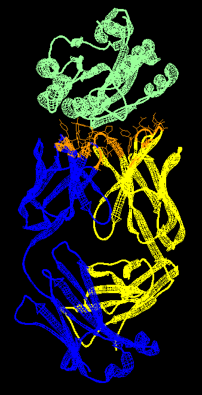
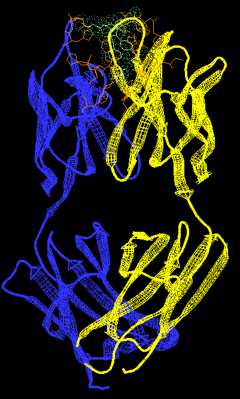
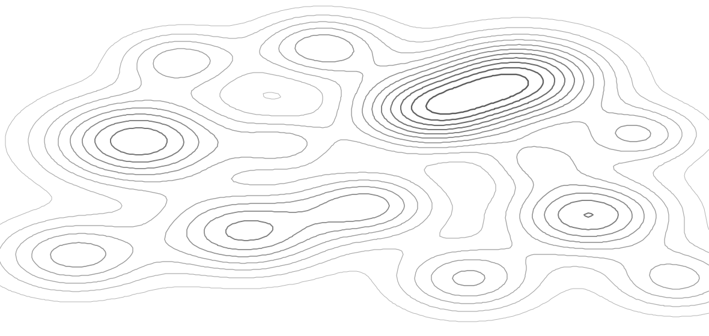

Library Approaches
- Antibody selection
- Directed Evolution
- Combinatorial Libraries


Cells, phages, ribosomes, or microemulsions
In all library methods, there is first diversity generation and then selection of desired variants. Here we illustrate a library of genes in which the one in tan has a property that is distinct from the others. A library of genes drawn as nine arrows scattered over the field, one of them tan — the variant with a property the others lack. On the click every arrow is shut inside its own oval compartment: a cell, a phage, a ribosome or a microemulsion, each one tying a gene to the protein it encodes.A Selection involves a procedure applied to the library population that results in selective survival of the desired population
A Screen involves individually examining members of the library and choosing those members with the desired activity
There are many ways of generating the genetic diversity, several ways of associating genotype with phenotype, and many ways of enriching for desirable variants. The enrichment process can be either a selection or screen. In a selection, you apply a procedure to the library population that results in selective survival of the desired population. In a screen, you individually assay each member of the population and choose those with desired activity. The two ways of enriching a library, set against each other: a selection acts on the whole population at once and lets only the desired members survive, while a screen examines members one at a time.


Heavy chain gene – located on chromosome 14
Light chain kappa (κ) gene – located on chromosome 2
Light chain lambda (λ) gene – located on chromosome 22
38–46 V × 23 D × 6 J = 5,244 to 6,348 combinations Light Chain similarly has V and J recombination
VDJ recombination results in one antibody gene of the IgM form. An initial “hit” that binds the antigen (weakly) is selected from a single B cell expressing a single IgM
Gene counts: IMGT, human IGH locus (imgt.org)
All cells in the mouse begin with identical heavy and light chain gene sequences. The heavy chain gene is located on chromosome 14, while the light chain genes—kappa (κ) and lambda (λ)—are found on chromosomes 2 and 22, respectively. Where the antibody genes sit — heavy chain on chromosome 14, the two light chains on 2 and 22 — then the heavy chain locus counted out: 38–46 functional V, 23 D and 6 J genes, 5,244 to 6,348 combinations, and a light chain recombining the same way. What comes out is one IgM gene per B cell.Gearhart et al. Nature. 1981;291:29-34. PMID: 7231520
If a B-cell becomes activated by binding to an antigen, it will begin the process of affinity maturation. In this diagram, we show the VH domain. VH is the region of the Fab fragment on the heavy chain that contains the CDR loops -- it combined with the VL domain are the two balls of protein that directly bind the antigen. Thus, this diagram speaks only of one such domain. The VDJ recombination results in regions of the protein called the hypervariable loops, which is the same as the CDR loops. During affinity maturation, mutations are focused on the hypervariable regions to further improve the avidity and specificity of the antibody. One V-heavy domain, residue 1 to 100, with its three hypervariable regions marked. Beneath it, ten hybridoma clones raised in mice against phosphorylcholine, each compared against T15 — the unmutated germline sequence that dominates the first response. The five IgM clones, taken before maturation, are identical to it. The five IgG clones, taken after class switching, each carry a few amino acid substitutions, and the arrows mark where those substitutions fall: inside the hypervariable loops.Activation-Induced (Cytidine) Deaminase (AID): mutates C’s to U’s in the variable regions
The G:U mismatch is repaired by a DNA repair mechanism involving an error-prone DNA polymerase
Additional mechanisms introduce codon insertions/deletions in the variable regions
Replacement of the heavy-chain IgM constant region with an IgG version
